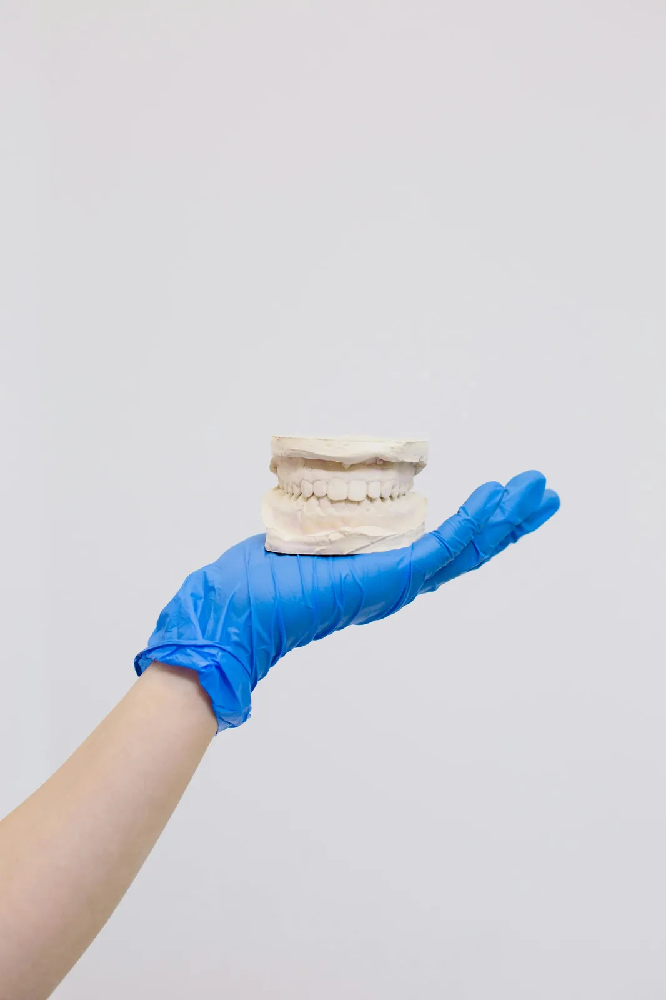

Administrator danych
Administratorem danych jest Labor-Tech Anna Jarosz, ul. Sielankowa 9/1a, 20-802 Lublin, e-mail: labortechlublin@gmail.com, tel. +48 608 373 443.
Szanujemy prywatność. Poniżej opisujemy, jakie dane przetwarzamy w związku z kontaktem i współpracą B2B z gabinetami.

Administratorem danych jest Labor-Tech Anna Jarosz, ul. Sielankowa 9/1a, 20-802 Lublin, e-mail: labortechlublin@gmail.com, tel. +48 608 373 443.
Przetwarzamy dane przekazane w korespondencji i zapytaniach (np. imię i nazwisko, dane gabinetu, numer telefonu, e-mail) oraz treść wiadomości niezbędną do obsługi współpracy.
Dane przechowujemy przez czas niezbędny do obsługi zapytania i współpracy, a w przypadku dokumentów rozliczeniowych — przez okres wymagany przepisami prawa.
Dane mogą być powierzane podmiotom wspierającym nas w utrzymaniu strony i poczty (np. hosting, dostawca e-mail) wyłącznie w zakresie niezbędnym do świadczenia usług.
Przysługuje Ci prawo dostępu do danych, ich sprostowania, usunięcia, ograniczenia przetwarzania, sprzeciwu oraz prawo wniesienia skargi do organu nadzorczego (PUODO).
Strona wykorzystuje pliki cookies niezbędne do jej prawidłowego działania oraz w celach statystycznych, jeśli takie narzędzia są używane. Ustawienia cookies możesz zmienić w przeglądarce.
W sprawach związanych z prywatnością napisz na labortechlublin@gmail.com lub zadzwoń: +48 608 373 443.